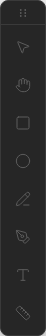

2D 描画
左のツールパレットから図形を描き、寸法線や注記を追加します。 閉じた輪郭が 3D 生成の材料になります。

ツール一覧

| ツール | キー | 3D に使える | 概要 |
|---|---|---|---|
| 選択 | V | — | 図形の選択・移動・サイズ変更 |
| パン | H | — | キャンバスの移動 |
| 矩形 | R | ✓ | 四角形（角丸も可） |
| 円 | C | ✓ | 円 |
| 線 | L | — | 補助線・中心線 |
| ペン | — | ✓（閉じた場合） | ベジェ曲線・自由な輪郭 |
| テキスト | T | — | 注記・ラベル |
| 寸法線 | D | — | 長さの表示（アノテーション） |
3D に使えるのは「閉じた輪郭」だけです。線・テキスト・寸法線・開いたベジェは 3D 生成に含まれません。
矩形・円などの塗り色は 2D 表示に加え、3D プレビューのメッシュ色にも反映されます。 色の指定方法は 編集操作 — 外観（塗り・線色） を参照してください。
矩形 (R)
- 矩形ツールを選び、キャンバス上でドラッグ
- Shift を押しながらドラッグすると正方形になります
- 選択後、Design タブで X/Y/W/H、塗り・線色、角丸 (rx) を編集できます

円 (C)
- 円ツールを選び、中心付近からドラッグして半径を決定
- 選択後、Design タブで中心座標 (cx, cy) と半径 (r) を編集
- 円は 3D 生成で円柱や穴の輪郭になります
線 (L)
- 線ツールで始点・終点をクリック（またはドラッグ）
- 補助線・中心線・参照線、カット（切り込み）線として使います
- 3D 立体には影響しませんが、スナップの基準として有効です
線は用途を 役割（role） で区別できます。選択して Design タブの「線の役割」で切り替えると、表示スタイルが役割ごとに変わります。 既定は 作図線 です。
| 役割 | 用途 | 表示 | 3D |
|---|---|---|---|
| 作図線 (drawing) | 一般の作図線・参照線（既定） | 実線 | 影響なし |
| カット / 切り込み (cut) | 切り込み・スリット（製造意図の注釈） | 実線（色で区別） | 影響なし |
| 注釈 (annotation) | 引出線・コールアウト・注記の補助線 | 短い破線 | 影響なし |
| 作図補助線 (construction) | 一時的なガイド・あたり線 | 一点鎖線・半透明 | 影響なし |
role: "cut" の線が暗黙に 3D を削ることはありません。
3D に切り欠きを出すには、図形のジオメトリ自体に切り欠き形状を持たせます
— 矩形・円を ブール演算で差し引く、または閉じたパスの輪郭にスリットを含める、など。
こうすると 2D で見えている形がそのまま 3D になります（派生）。
Module Joint 1 のキーホール（穴＋端への切り込み）は、外形パスにこの切り欠きを焼き込んであります。
ペン（ベジェ）
- クリックで点を追加、ドラッグで曲線のハンドルを調整
- 始点に戻ってクリックするとパスを閉じられます（3D 輪郭になる）
- 作図中 Enter で確定、Backspace で直前の点を削除
- 選択ツールで図形を選び「パス編集モード」でノードを個別編集
テキスト (T)
- テキストツールでクリックし、文字列を入力（編集ダイアログが開きます）
- Design タブ、または右クリック →「テキストを編集」で内容・書式を変更
- 部品名や材料名などの注記に使います
テキスト図形で設定できる主な項目:
| 項目 | 内容 |
|---|---|
| 文字列 | 複数行入力可 |
| 文字サイズ | px 単位（デフォルト 3.5） |
| 行間 | 倍率（0.5〜4、デフォルト 1） |
| フォント | 同梱 Gen Interface JP（和欧混植 UI 書体）、およびプロジェクトに登録した Google Fonts |
| ウェイト | Regular / Bold（登録フォントは 400 / 700 の TTF を使用。700 が無い場合は Regular にフォールバック） |
| 揃え | 左 / 中央 / 右 |
| 幅 | 折り返し幅（mm）。未指定なら 1 行表示 |
| 線色 | 文字色として使われます |
表示プレビューとアウトライン化では HarfBuzz テキストエンジンを使い、登録済みフォントの TTF バイト列からグリフ輪郭を描画します。
ブラウザ単体でも HTTP サーバー経由（npm run serve）で同じエンジンが動作します。
テキスト図形そのものは 3D 輪郭になりません。 アウトライン化 して path 図形に変換すると、3D 生成の対象にできます。
プロジェクトフォント（Google Fonts）
右パネル Pages タブ内の プロジェクトフォント（任意） から、 Google Fonts をプロジェクトに追加できます。 同梱の Gen Interface JP に加え、ロゴ用・注記用の書体を選べます。
「フォントを探す…」モーダルの一覧は、Fontsource API 経由の Google Fonts カタログ（オンライン）です。
OS のフォントフォルダや queryLocalFonts とは無関係です。
初回は Fontsource から一覧を取得し、キャッシュします（Electron: ユーザーデータフォルダ / ブラウザ: localStorage）。
登録のしかた
- フォントを探す… — モーダルで検索・フィルタ（日本語 / カテゴリ）→ 選択 → ライブラリに追加（デフォルトで現在のプロジェクトにも追加）
- Google Fonts URL —
https://fonts.googleapis.com/css2?family=...を直接貼り付け（1 URL に複数 family があればまとめて登録） - ライブラリから ＋ — 過去に登録したフォントを別プロジェクトへ追加
2 層の保存先
| 層 | 保存先 | スコープ |
|---|---|---|
| ライブラリ | Electron: userData/fonts-library.json / ブラウザ: localStorage |
アプリ全体（プロジェクトをまたいで再利用） |
プロジェクト fonts[] |
プロジェクト JSON に含まれる | そのプロジェクトだけ（Undo 対象・エクスポート対象） |
URL 登録時も、自動的にライブラリへ保存されます。 ライブラリの × はライブラリから削除するだけで、既にプロジェクトに入っているフォントは残ります。
ウェイト（Regular / Bold）
登録時に Fontsource から 400（Regular） と 700（Bold） の TTF URL を解決します（700 が無いフォントは Regular のみ）。 テキストのウェイトを Bold にすると、アウトライン化・ネイティブプレビューでも Bold 用 TTF が使われます。
各登録エントリの主なフィールド:
family— フォント名（例:Roboto）cssUrl— 表示用 Google Fonts CSS（Bold 対応時はwght@400;700形式）fileUrl— アウトライン用 TTF（400）fileUrlBold— アウトライン用 TTF（700、省略可）
一度モーダルで Roboto をライブラリに入れておけば、次のプロジェクトではライブラリの ＋ だけで追加できます。
チームで共有する場合は、プロジェクト JSON の fonts[] をそのまま渡せば同じ書体構成を再現できます。
テキストのアウトライン化
テキストをグリフごとの path 図形 に変換する機能です。 ロゴ文字や刻印文字を 3D プリント用の輪郭にしたいときに使います。
- テキスト図形を 1 つ選択
- Design タブの「アウトライン化」、または右クリック →「アウトライン化」
- 元のテキストは グループ（path の集合）に置き換わります
アウトライン化は Electron 版でのみ利用できます（macOS では Core Text、それ以外は fontkit / HarfBuzz）。 ブラウザ単体ではボタンが無効になります。 登録フォントを使う場合は TTF をダウンロードしてから輪郭化します。
詳しい編集操作は 編集操作 — テキストのアウトライン化 を参照してください。

寸法線 (D)
水平・垂直の寸法線を引いて、図面上に長さを表示できます。3D 生成には影響しません。
- 寸法線ツール (D) を選択
- 計測したい 2 点を順にクリック
- 3 点目で寸法線の位置（オフセット）を決定
- 数値は座標から自動計算。Design タブで手動上書きも可能
矢印スタイル（点・矢印・スラッシュ等）、文字サイズ、接頭辞・接尾辞（例: L=、 mm）も設定できます。
キャンバス画像
ツールバーの 画像配置 から、PNG / JPEG / WebP / SVG を図面キャンバス上に配置できます。 配置した画像は通常のオブジェクトとして、選択・移動・リサイズ・回転・反転ができ、プロジェクト JSON に保存されます。
- 対応形式 — PNG / JPEG / WebP / SVG
- 編集 — Design タブで X/Y、幅、高さ、不透明度、画像容量を確認・編集
- 出力 — SVG / PDF 出力に含まれます
- 容量 — ラスター画像は読み込み時に最大辺 1600px へ縮小し、容量が小さくなる場合だけ WebP として内部保存
キャンバス画像はレイヤー内の通常オブジェクトです。 参照画像 は Pages タブ内のページ下敷きで、スケール校正やトレース用に使います。
スケッチ取り込み（参照画像）
手書きスケッチや写真を背景の参照画像として置き、スケールを合わせてから輪郭をトレースできます。 AI 連携（MCP）を使う場合は、外部の Vision が図形をゴースト（半透明の提案）として置き、内容を確認してから確定します。

1. 参照画像を読み込む
- 右パネル Pages タブを開く
- セクション 参照画像 を展開
- 画像を読み込む で PNG / JPEG / WebP を選択
- 不透明度 スライダーで下絵の濃さを調整
読み込み直後はキャンバス上をクリックしても下絵は動きません。位置や大きさを変えるときは次の手順で編集モードに入ります。

2. 位置・サイズを調整（任意）
下絵の配置や表示サイズを直すときだけ、矩形ツールと同様の枠とハンドルで編集します。
- 位置・サイズを編集 をクリック（青い枠と 8 つのハンドルが表示されます）
- 選択 (V) または手のひら (H) ツールのまま、ドラッグで移動、ハンドルでリサイズ（Shift で縦横比固定）
- 終わったら、ハイライトされた 位置・サイズを編集 をもう一度クリックして編集モードを終了
- 編集中はボタンが青くハイライトされます
- 編集モードを終了するまで、キャンバスをクリックしただけでは再び動かせません（誤操作防止）
- Esc でも終了できます
- 四角・線など別の描画ツールに切り替えても自動で終了します
- 移動・リサイズはマウスを離した時点で反映され、Ctrl+Z で戻せます
3. スケール校正
下絵上の実寸がわかる 1 本の線（例: 寸法表記のある辺、定規で測った長さ）を指定すると、画像全体がその実長に合わせて拡大縮小されます。
- スケール校正 をクリック（位置・サイズの編集モードは自動で終了します）
- 参照画像上で、わかる長さの線の一端をクリック
- 同じ線のもう一端をクリック（青/赤のマーカーと破線が表示されます）
- 実長 (mm) に 2 点間の本当の長さを入力し、適用（スケール校正パネル内のボタン）
- 中止は Esc またはパネルの キャンセル
スケール校正は図面全体の精度を決めます。寸法が書いてある辺、または定規で測った実長が分かる部分を選んでください。 手書きスケッチは誤差があるため、校正後も矩形ツールなどで仕上げる想定です。
4. ゴースト図形（AI 提案）
MCP の digitize_sketch 等で AI が矩形・円・線の提案を置くと、破線・半透明のゴーストとして表示されます。
ゴーストは編集・削除できますが、3D 生成には含まれません。
- ゴーストを確定 — 通常の図形に変換（この時点から 3D 輪郭の対象）
- ゴーストを削除 — 提案をすべて破棄
手動でトレースする場合は、通常どおり矩形 (R) やペンで輪郭を描いてください。詳細は AI 連携 — スケッチ digitize も参照してください。
ページとレイヤー
1 つのプロジェクトには複数のページ（上面図・正面図など）があり、各ページにレイヤーがあります。
- ページ — Pages タブで追加・切替。3D 用の上面/正面/側面はページ追加時に面の向きを選びます
- レイヤー — Layers タブで管理。表示/非表示、ロック、名前変更
- 新しく描いた図形は、常に現在選択中のレイヤーに追加されます


スナップ（吸着）
作図中、近くの端点・交点・中点などにカーソルが自動的に吸着します。Pages タブの「スナップ」で ON/OFF できます。
| 種類 | 意味 | 表示 |
|---|---|---|
| 端点 | 図形の角・線の端・ベジェノード | □ |
| 交点 | 線と線の交わる位置 | × |
| 中点 | 辺の中央 | △ |
| 中心 | 円や矩形の中心 | ◎ |
| 垂線 | カーソルから線分への垂線足 | ⊥ |
優先順位: 端点 → 交点 → 中点 → 中心 → 垂線。該当がなければグリッド（1 / 5 / 10 mm）に吸着します。
整列・合成など
複数図形の整列、グループ化、合成・くり抜き、Undo/Redo については 編集操作 を参照してください。
回転・反転について
図形の回転・左右反転・上下反転は、画面表示だけでなく BBox、整列、Profile 抽出、3D 生成にも反映されます。 寸法線の数値は図形に自動追従しないため、必要に応じて寸法線を引き直してください。
単位と縮尺
Millrect の数値は mm ベースです（内部 1 mm = 10 用紙単位）。ページの縮尺（例: 1/10）に応じて、用紙上の距離と実寸の関係が決まります。
ステータスバーの SCALE 表示で、現在のページの縮尺を確認できます。3D 生成用の図面では縮尺 1/1 を推奨します。